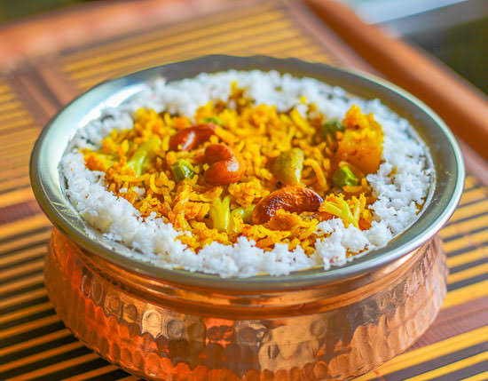

"Bhaat" (or भात) is a Hindi and Marathi term that generally translates to cooked or steamed rice. Depending on the region and context, it can refer to simple steamed rice, a spiced everyday meal, or popular regional variations made from leftover rice.